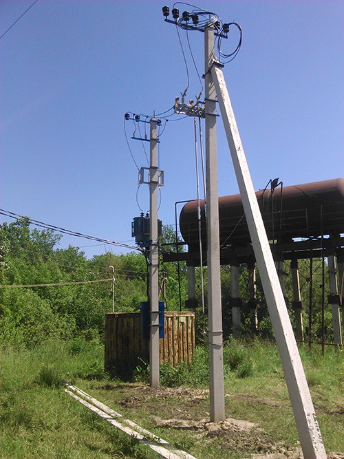

Ответственные электрики в Курске
Занимаемся ремонтом и прокладкой электропроводки в квартирах, домах и дачах. К нам приходят, когда строят дом, когда делают ремонт в новой или только что купленной квартире, когда хотят перенести розетки, выключатели или установить люстру.
8 (920) 264-68-49, Александр Павлов
Работаем внимательно
Встретимся и выясним что, где и как сделать, что нельзя сделать, стоит ли менять проводку. Заглянем в щиток и посмотрим автоматы.
Разберемся, какой провод лучше проложить. Нарисуем на стенах будущие розетки, выключатели и провода. Придумаем, где и как проложить провода, чтобы не было «соплей».
Клиенты спокойны
Заботы о материалах и расходниках возьмем на себя:
купим за свой счет, привезем, отчитаемся по чекам.
Договоримся о времени работ и согласуем
с соседями: если у
Если к дому не подведен свет, установим опоры, построим линию, смонтируем трансформаторную подстанцию.
 Узел для подключения настенного телевизора.
Кабеля (HDMI, телевидение) спрятаны в
Узел для подключения настенного телевизора.
Кабеля (HDMI, телевидение) спрятаны в
 «Простенькая» трансформаторная подстанция для снабжения электричеством дачного кооператива.
Распределительный щит котельной в доме. Для каждого прибора — отдельный автомат: если один сломается, остальные продолжат работу.
За работу отвечаем
Как закончим, включим и проверим автоматы, линии, розетки и точки.
Подготовим все к дальнейшей отделке: установим временные розетки,
соберем временное освещение.
Если
Связаться
8 (920) 264-68-49, Александр Павлов